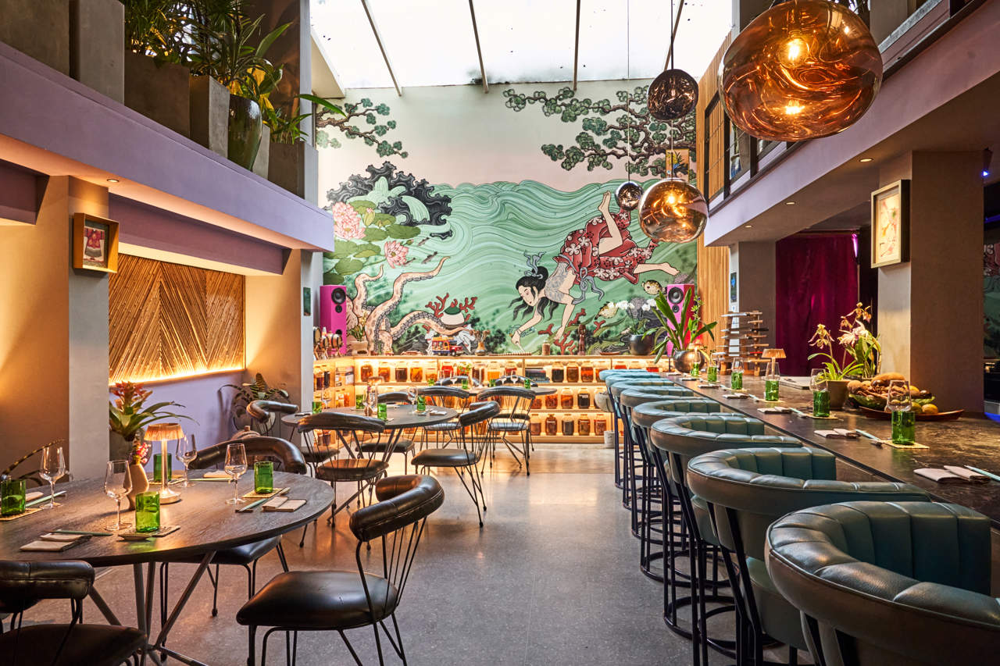

Cafés
Espacios bonitos para trabajar, conversar o disfrutar un buen café guatemalteco.

Restaurantes
Opciones para probar sabores locales, comida internacional y lugares familiares.
Lugares turísticos
Destinos naturales, históricos y culturales para conocer dentro de Guatemala.

Paseos o Centros Comerciales
Lugares modernos para comprar, pasear, comer y disfrutar entretenimiento en Guatemala.